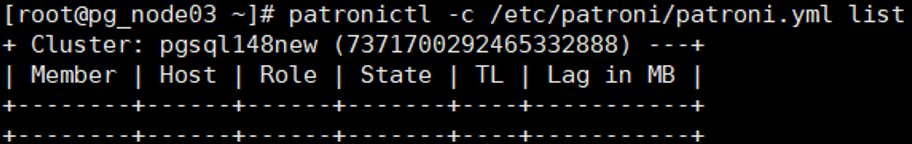

This section describes how to restore a PostgreSQL instance that has been backed up to its original location or a new location.
Context
Backup, archive, and replication copies (data cannot be restored to the original location) can be used for restoration. Data cannot be restored to the original location using archive copies of replication copies.
Prerequisites
- Before restoration, ensure that the remaining space of the data directory at the target location for restoration is greater than the size of the copy used for restoration before reduction. Otherwise, restoration will fail.
- Before restoring data to a new location, ensure that the database installation user has the read and write permissions on the target path of restoration.
- If the resource to be restored is an active/standby MPP cluster, ensure that the active/standby database information is correct before stopping the database. Otherwise, you need to scan the restoration target resource.
- If the port of the target instance is occupied, release the occupied port before the restoration.
- If the target instance is a cluster instance, the Pgpool service on each node must have been stopped and the Pgpool port must not be occupied. Otherwise, the restoration fails.
- Stop the PostgreSQL database before the restoration.
- Before restoring a Patroni cluster, clear etcd data.
- Run the systemctl stop patroni command on each node to stop all nodes in the cluster.
- Run the patronictl -c /etc/patroni/patroni.yml list command on any cluster node to check whether the node information is cleared. If an empty table is displayed in the command output, the node information has been cleared.
- If yes, no further action is required.
- If no, go to the next step.
- Run the cat /etc/patroni/patroni.yml command to open the patroni.yml file.
- Find and record the value of namespace, as shown in the following figure.

- Run the etcdctl del --prefix " namespace " command to delete etcd data.
Example: etcdctl del --prefix " /service148new/ "
- To restore a PostgreSQL cluster deployed based on Patroni using log copies to its original location in 1.6.0 and later versions, you need to configure the patroni.yml file in advance. The configuration is as follows:
In the patroni.yml file, add the following configuration under bootstrap:
method: OceanProtectPITR OceanProtectPITR: command: "mv $PGDATA/../OceanProtectData/DATADIR $PGDATA/../" no_params: True keep_existing_recovery_conf: True
- $PGDATA/../ is the upper-level directory of the data directory, for example, /usr/local/pgsqltest.
- DATADIR in $PGDATA/../OceanProtectData/DATADIR indicates the data directory name, for example, /usr/local/pgsqltest/OceanProtectData/data.
Procedure
- Choose Explore > Copy Data > Databases > PostgreSQL.
- You can search for copies by PostgreSQL instance resource or copy. This section describes how to search for copies by resource.
On the Resources tab page, locate the resource to be restored by resource name and click the name.
- Select the year, month, and day in sequence to find the copy.
If
 is displayed below a month or date, copies exist in the month or on the day.
is displayed below a month or date, copies exist in the month or on the day. - Restore data to a specified point in time or using a specific copy.Table 1 describes the related parameters.
Table 1 Parameters for restoring a PostgreSQL instance Parameter
Description
Restore To
Select either Original location or New location.
NOTE:When performing restoration to a new location, if the copy has a tablespace directory other than the data directory, ensure that the operating system user who installs the database in the new location instance can access the tablespace directory with the same name on the host in the new location.
Location
If you select Original location for restoration, the location of the current instance is displayed by default.
Target Host
Specify the target host, which is mandatory if you select New location for restoration.
Target Instance
Specify the target instance, which is mandatory if you select New location for restoration.
Script to Run Before Restoration
You can execute a self-defined script before a restoration job is executed or after it succeeds or fails, all based on your needs. You need to enter the absolute path of the script.
- The Windows OS supports .bat scripts.
- Non-Windows OSs support .sh scripts.NOTE:
If Script to Run upon Restoration Success is configured, the status of the restoration job is displayed as Succeeded on the OceanProtect even if the script fails to be executed. Check whether the job details contain a message indicating that the post-processing script fails to be executed. If yes, modify the script in a timely manner.
Script to Run upon Restoration Success
Script to Run upon Restoration Failure
- Click OK.